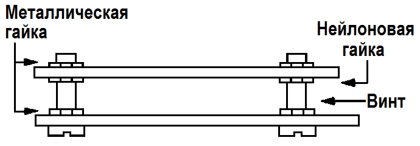
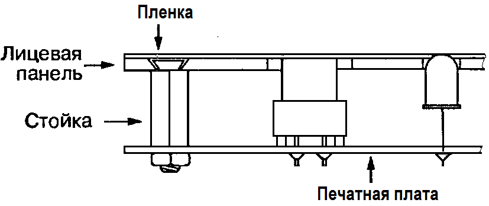

Крепление печатной платы
Для крепления печатной платы на некотором расстоянии от корпуса и от других плат используются стойки из различных материалов. Если под рукой нет стоек подходящего размера, можно воспользоваться длинными винтами диаметром 3 мм с гайками для крепления плат на нужном расстоянии от корпуса (рис. 1). Со стороны металлизации печатной платы лучше использовать гайки из нейлона (или подложить под металлическую гайку изолирующую шайбу), чтобы изолировать винты от дорожек, проходящих вблизи крепежных отверстий.

Рис. 1 - Крепление печатной платы к корпусу
При оформлении лицевой панели современных приборов теперь уже не используют выступающие кнопки и поворотные переключатели, которые крепились на алюминиевом листе с надписями, нанесенными черной краской. Предпочтение отдается плоским поверхностям, за которые не выступают компоненты, служащие для управления и индикации (рис. 2). Эти компоненты размещаются группами в соответствии с выполняемыми функциями.

Рис. 2 - Крепление печатной платы к лицевой панели
Панель обычно выполняется из листового металла или пластмассы и имеет светлый фон с разноцветными надписями. Изготовление подобных панелей существенно облегчается при использовании современных цветных принтеров. Печать на прозрачных листах, которые используются для проекторов, позволяет быстро и качественно изготовить рисунок панели с необходимыми надписями. Другой способ изготовления рисунка — выполнение цветной ксерокопии с бумажного оригинала на прозрачную пленку. Пленку можно наложить на непрозрачную основу, в которой сделаны отверстия для индикаторов. Пленку с рисунком имеет смысл закрыть сверху прозрачной самоклеющейся пленкой, а все элементы закрепить по краям скотчем.
Печатная плата с индикаторами и сенсорными кнопками должна располагаться непосредственно за лицевой панелью. Для ее крепления используются винты с потайными головками, утопленными в панель под пленкой с рисунком. Монтаж компонентов следует выполнять после временного прикрепления печатной платы к лицевой панели и тщательной разметки необходимых отверстий. Размеры отверстий в местах установки кнопок должны выбираться с запасом. Желательно не поднимать компоненты над платой и располагать ее так, чтобы расстояние до лицевой панели определялось высотой кнопки.
Некоторые элементы, занимающие много места (например, кварцевые генераторы), можно разместить в «лежачем» положении или с противоположной стороны платы.
Необходимо определить способы монтажа до выполнения рисунка печатной платы. Рядом с каждой кнопкой следует расположить по крайней мере одну опору, чтобы плата не деформировалась при нажатии.
Источники
radioslon.chernykh.net - Применение стоек для крепления электронной платы